w00024 t37 · 2026-10-28。背景：t35 的真实小抽取里，核对只能写“可能是同一人”的候选，没有地方确认；抽取还留下核对管不到的错（马甲与人物的种类建错、称呼挂错对象）。下面是静态稿：数据取自那次真实抽取（样例书 sample-10、魔女学院 witch-20），按钮都不能点。三道待定的题，一道要你过目的规则。
每章最多问 5 个马甲，一本书抽完可能有几十条候选，再加上以后“检查这本书”提出的建议。要定的是用户在哪里处理它们。
候选连接显示在人物卡头部（称呼下面），带原文依据与“确认是同一人 / 不是”。没有新的页面。适合“正在看这个人、顺手处理”。
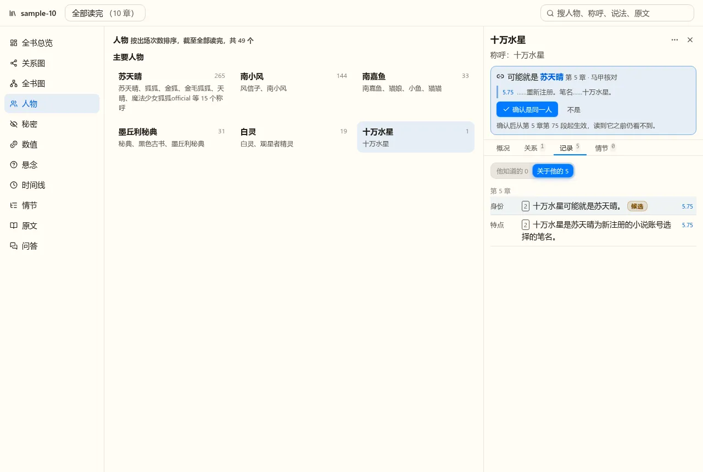
导航里加“待确认”（带数量），一页逐条列出所有建议：来源、要改什么、原文依据，按钮“确认 / 驳回”。适合一次处理一批，人物卡不动。
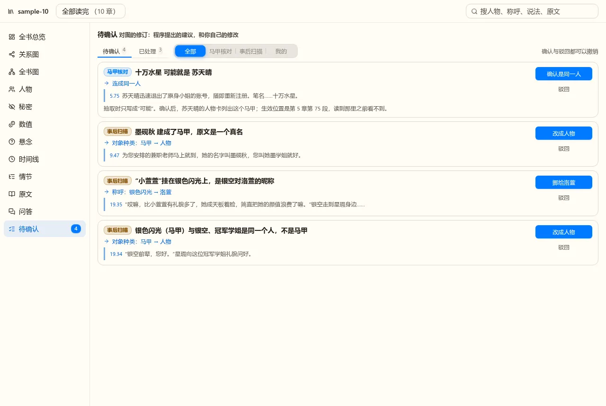
同一条建议两边显示同一份数据：待确认页里批量处理；点其中一条，右边抽屉打开那个人物卡，候选在头部高亮。人物卡上也能直接处理。多出来的只是人物卡头部那一块，数据与动作是同一套，成本不大。
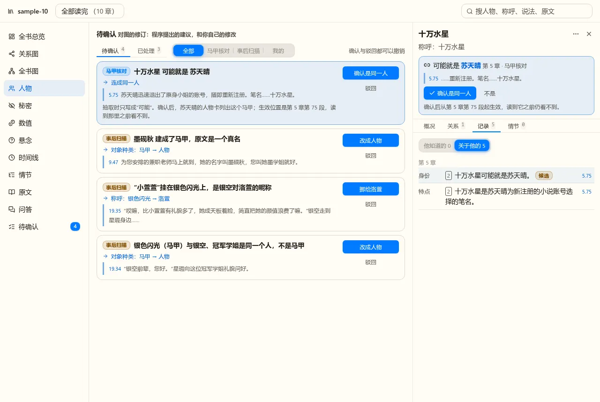
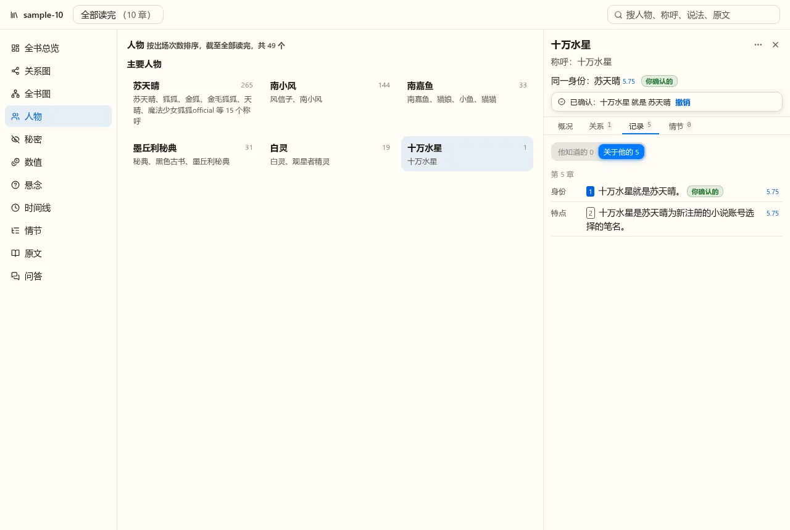
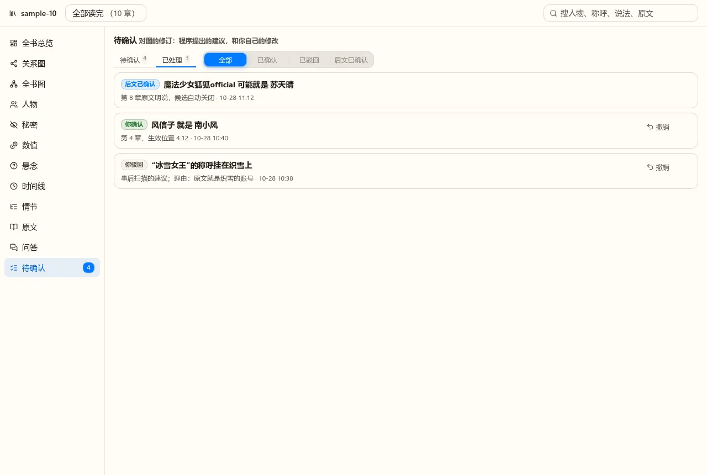
推荐 C 的理由：候选多的时候人物卡逐个找不现实，页里批量更合适；但看人物时遇到候选，就地处理最自然。
人物卡右上角“⋯”菜单是用户主动改图的入口，下面的图把可能的操作按批次标出。魔女学院那一本实际暴露的错有三个：银色闪光与银空被建成同一个“马甲”（应当是人物）、墨砚秋是真名却被建成马甲、“小萱萱”挂在银色闪光上（其实是洛萱的昵称）。只做身份连接解决不了后两类。
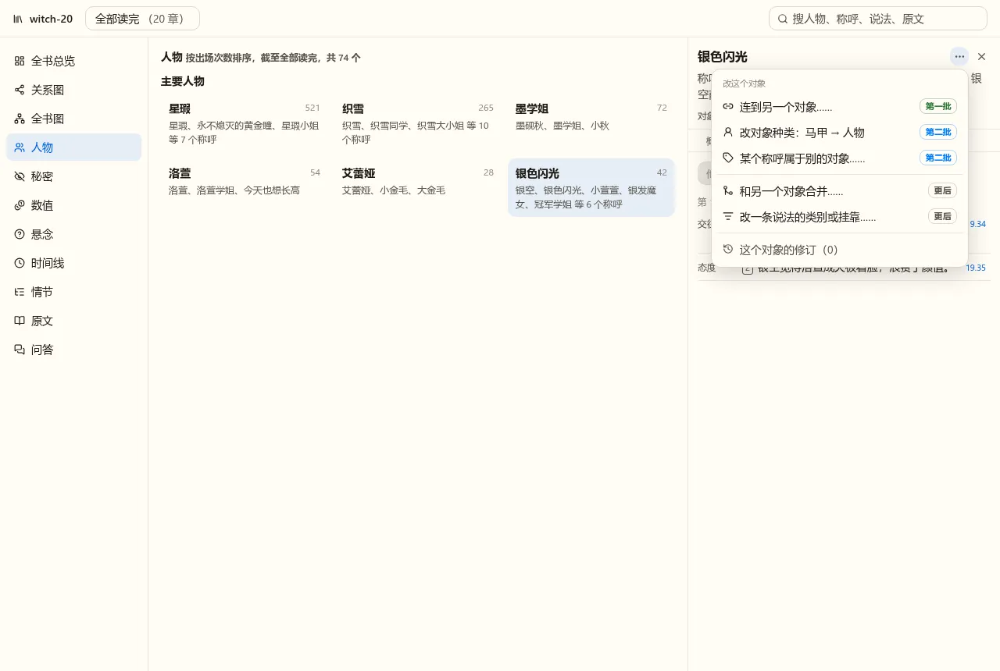
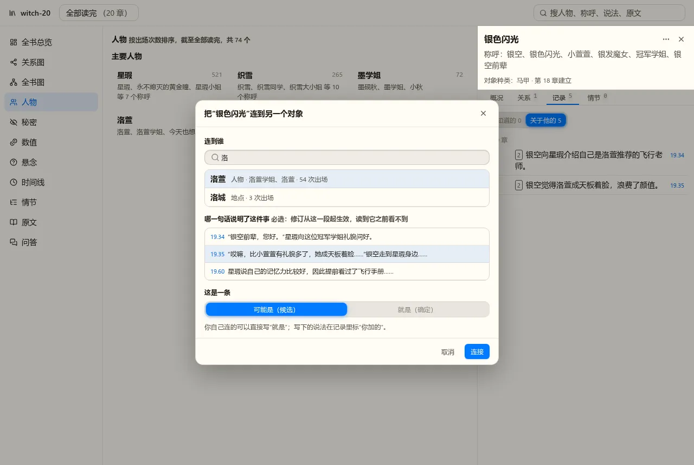
确认或驳回候选、手动连两个对象。最小的一版，一个中等的 Task 能做完。魔女学院的三个错一个也改不了。
菜单前三项（“第一批”“第二批”）。这样魔女学院三个错都能在界面里改掉；每一项都是一条修订记录，同一套“待确认 / 已采纳 / 已驳回”，加起来比 A 多的主要是一种对象种类的重新编译。
再加合并两个建重的对象、改一条说法的类别或挂在哪个对象上。合并会牵动出场、知情、秘密等一串派生数据，改说法类别要重算记录等级，范围和测试量都明显更大，建议等 B 用过之后再定。
t33 试过让模型通读已抽取的图找问题。它提出的修订里真问题约三分之一，其余是噪声，所以不能自动套用，只能进“待确认”给人过目。做成产品大概是页面顶部的一块：点“开始检查”、看进度与费用，结果逐条进待确认。
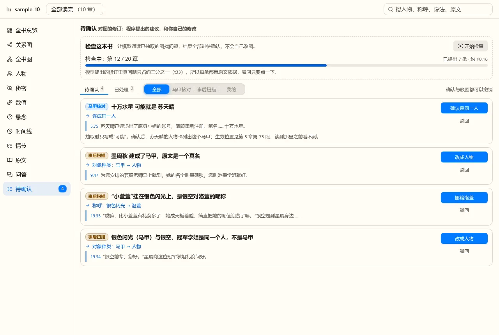
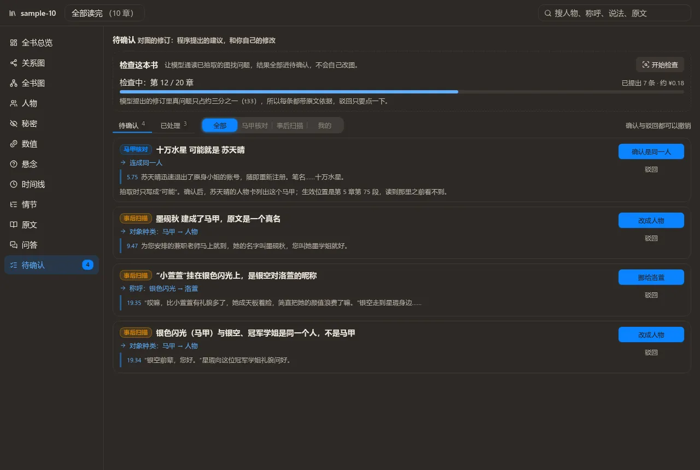
一个版本里用户就能从“检查”到“确认”走完。但要多一个长耗时的真实模型任务（进度、停止、断点、费用），覆盖层本身还没经过使用。
覆盖层先带“马甲核对”与“你”两个来源。扫描建成覆盖层的第三个来源：待确认页的“来源”筛选已经为它留了位。先看覆盖层好不好用、噪声有多少，再定扫描要多贵多严。
改图靠用户自己发现问题再动手；程序提出的建议只有马甲核对这一种。
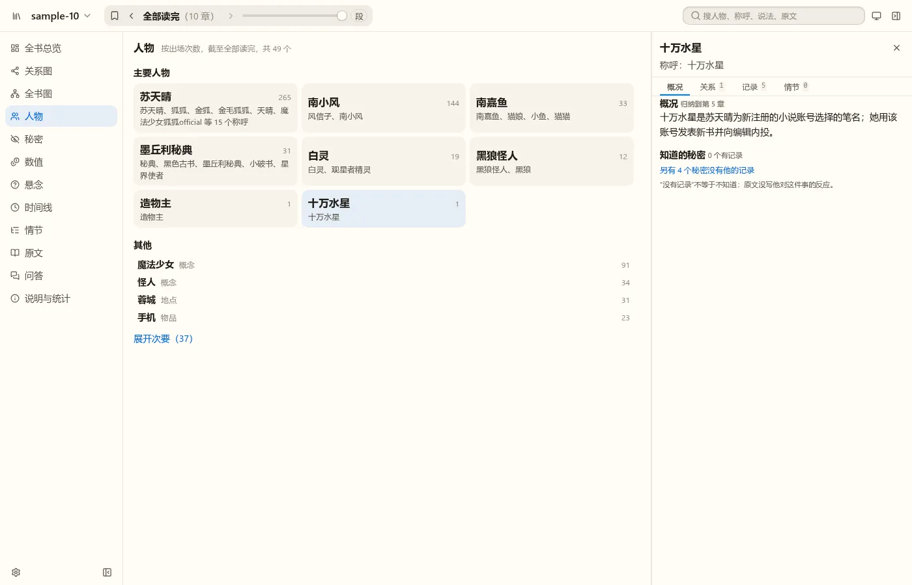
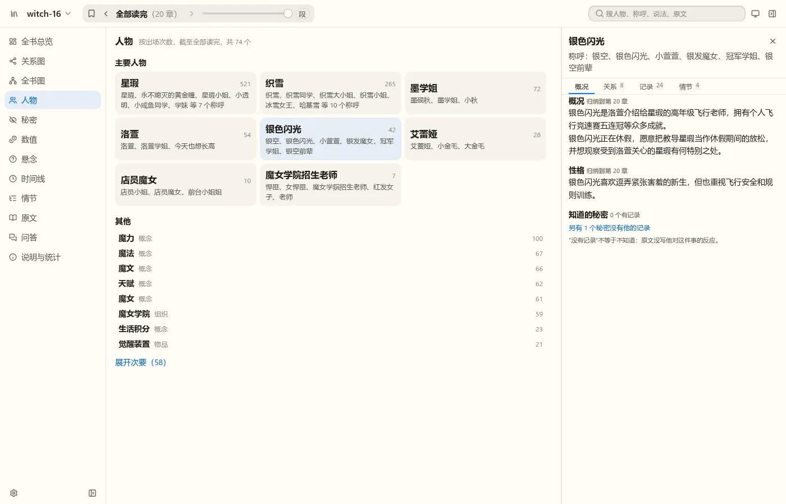
docs/specs/story/ingest.md 输出 20；候选与确定的区别：docs/specs/story/queries.md 的“身份连接”。